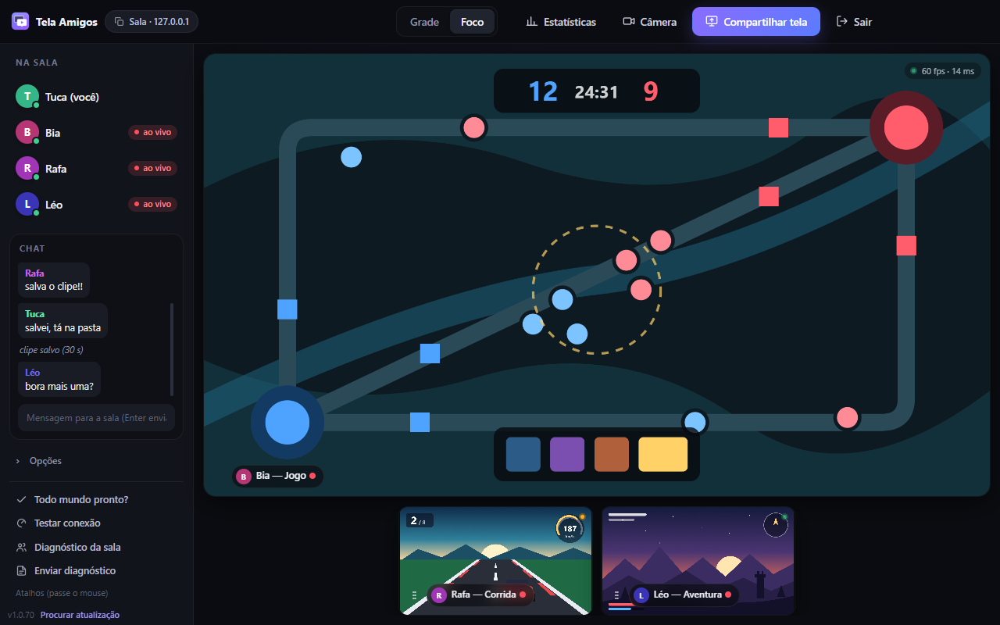
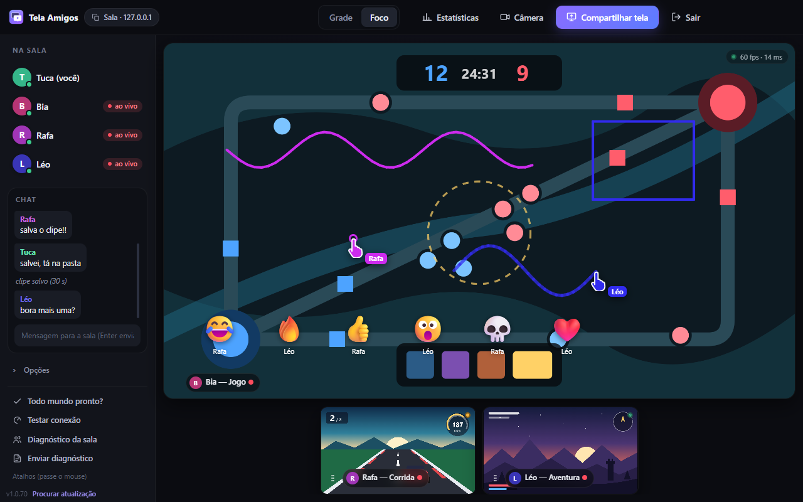

Todo mundo transmite
Uma tela em destaque e as outras em miniatura, ou todas lado a lado na grade. Troque com um clique.
Todo mundo transmite ao mesmo tempo, direto de PC para PC e com o som do jogo. Para jogar junto, assistir junto e mostrar o que você está fazendo.

Nada de uma pessoa só transmitindo numa chamada: no Tela Amigos cada amigo compartilha a própria tela, com qualidade de verdade.
Uma tela em destaque e as outras em miniatura, ou todas lado a lado na grade. Troque com um clique.
1080p a 60 fps, codificado na placa de vídeo em H.264, H.265 ou AV1, quase sem pesar no jogo.
O som do PC vai junto com a imagem. O som do Discord fica de fora, para ninguém ouvir eco.
Pela rede do Radmin VPN, sem servidor no meio, ou por uma sala online com código de 6 letras.
Riscos, mãozinha e emotes em cima da tela do amigo. Ele vê no próprio monitor, por cima do jogo.
Salve os últimos 30 segundos de qualquer tela, grave sem limite de tempo ou tire uma foto.
O "Todo mundo pronto?" conta 3, 2, 1 e todo mundo dá play no vídeo na hora certa.
Chat, câmera, zoom e volume separado para cada amigo (até 300%), com o som de todos nivelado.
"Olha ali, atrás da pedra!" Agora dá para mostrar. O que você desenha aparece no monitor do amigo, por cima do jogo, sem entrar na transmissão.

Do fliperama ao caderno, do terminal à taverna. Cada tema muda o visual, os emotes, as animações e o jeito de desenhar. Muda na hora e só no seu PC: cada amigo usa o que quiser.
Passe o mouse para pausar.
Escolha o que for mais fácil para a turma. Nos dois, o vídeo vai direto de PC para PC, e quem tem internet fraca recebe uma versão mais leve, sem puxar a qualidade dos outros para baixo.
Todos na mesma rede do Radmin (ou Hamachi, Tailscale, rede local).
Não precisa instalar mais nada: só o código.
Clique em Baixar para Windows e abra o TelaAmigos-Setup. Se o Windows avisar, clique em Mais informações → Executar assim mesmo.
Hospede uma sala pelo Radmin ou crie uma sala online e mande o código. Na primeira vez, um tour rápido mostra onde fica cada coisa.
Clique em Compartilhar tela, escolha a tela ou a janela e pronto: os amigos já estão vendo.
Ajuda bastante: a imagem é codificada na placa (NVIDIA, AMD ou Intel), quase sem pesar no jogo. Sem ela, o processador faz esse trabalho. Funciona, mas pesa mais, e o app avisa quando isso acontece.
O instalador não tem assinatura digital paga, então o Windows pode mostrar "O Windows protegeu o computador". Clique em Mais informações → Executar assim mesmo. Só acontece na instalação.
Limite o FPS do jogo um pouco abaixo da taxa do monitor (por exemplo, 141 num monitor de 144 Hz). A placa fica com folga e a transmissão e o jogo ficam lisos.
A cara do app é só sua: cada amigo escolhe a dele. Mas os emotes, a mãozinha e os riscos da caneta que você põe na tela de alguém aparecem para todos no seu tema.
Pelo Radmin, direto do seu PC para o de cada amigo, sem servidor no meio. Na sala online o vídeo também vai direto pela internet; pelo servidor da sala passam só as mensagens de conexão (quem entrou, o chat). Se você ligar "Servidor de vídeo quando precisar", a sua tela pode passar por um servidor de vídeo quando o seu upload não dá conta de mandar uma cópia para cada amigo.
Clique em Enviar diagnóstico. O app gera um arquivo na Área de Trabalho com tudo o que ajuda a achar o problema; mande para quem cuida do app.
Baixe o Tela Amigos, mande o código e comece a compartilhar em um minuto.